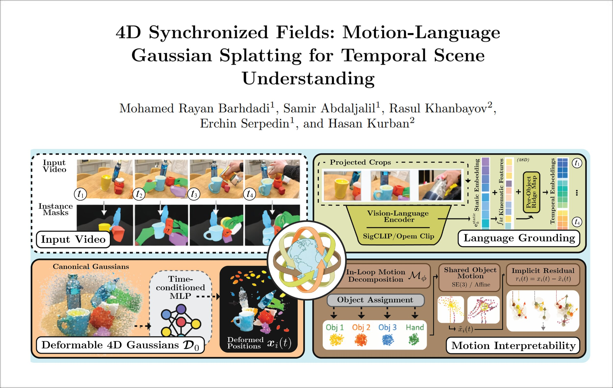
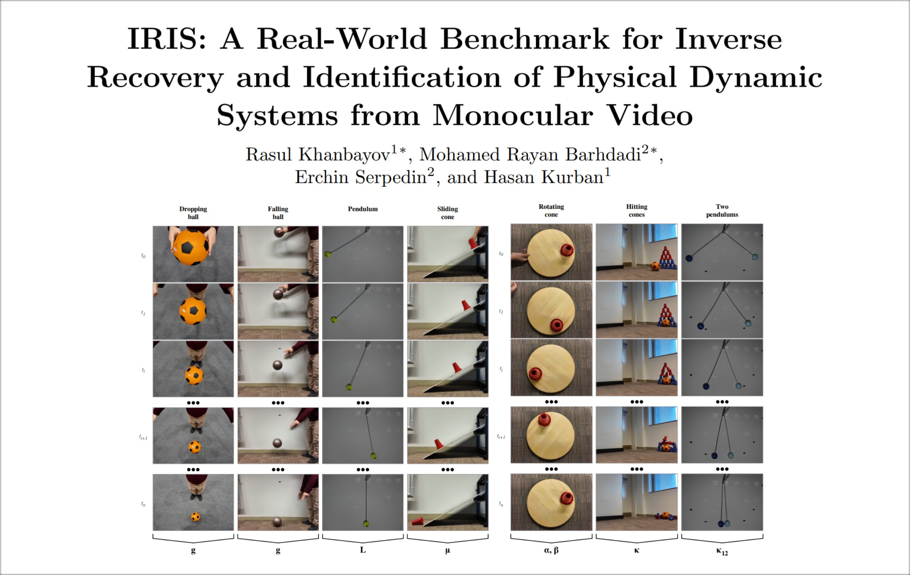
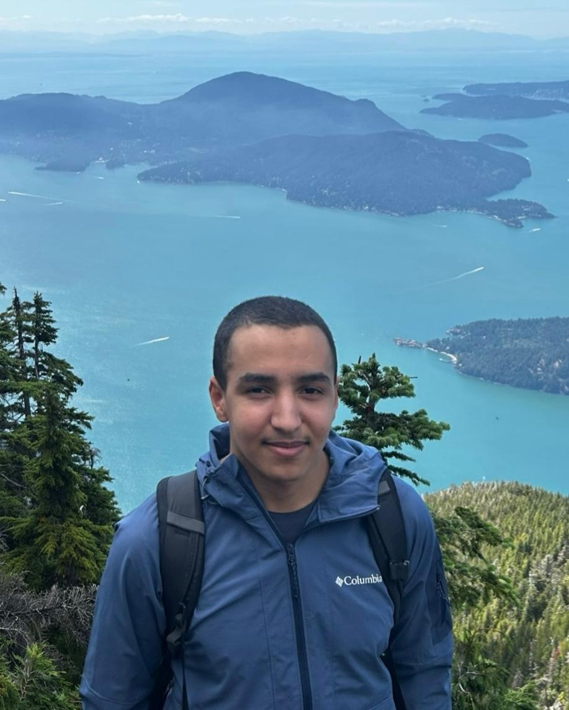
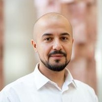
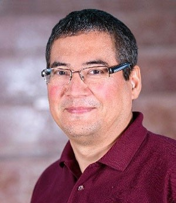

Vision: The physical world is the first teacher. Long before language, biological intelligence learns through structured perception: tracking objects, predicting trajectories, inferring causality from interaction. Current AI skips this curriculum entirely. The dominant paradigm relies on scaling text-based models, and is hitting diminishing returns against the data wall, language-centrism, and the inability to learn beyond what is already written down. The intellectual trajectories of AI and cognitive science have long overlapped; today, the successes and failures of deep learning demand that we take this overlap seriously. My research asks which properties of physical reality and human cognition transfer to machine intelligence and perception, how they transfer, and why, not only to match human capabilities, but to identify the computational primitives that could allow systems to learn new things beyond current human knowledge through grounded interaction with the world. This question spans computer vision, representation learning, and cognitive science: How should the structure of motion, objects, and causes inform what machines learn and in what order? Can the developmental ordering that biology converged on serve as a training curriculum for artificial systems? And when these systems are deployed in social settings, how do we ensure that they produce more equitable outcomes?
Bio: Mohamed Rayan Barhdadi is a third-year Electrical Engineering student at Texas A&M University (based at the Qatar campus) with a minor in Mathematics, working on 4D scene understanding, motion-grounded representation learning, cognition, and multi-agent systems. His work has been accepted at and is under review at top ML/CV venues such as NeurIPS, ICML, ECCV, and CVPR, and he has given talks at MIT, NeurIPS, Texas A&M, and others. He works under the supervision of Prof. Hasan Kurban and Prof. Erchin Serpedin.
Note: I am applying to PhD programs this coming cycle for Fall 2027.
News
- Mar 2026 Attending EACL in Rabat, Morocco this week.
- Feb 2026 2 new papers on arXiv, make sure to check them out!!
- Jan 2026 Attending MenaML Machine Learning Winter School at KAUST.
- Dec 2025 Heading to San Diego to give a talk and present EMPATHIA at NeurIPS 2025.
- Oct 2025 1st Place at QCRI Research Symposium!
- Oct 2025 Gave a talk at MIT URTC!
- Sep 2025 Visited EPFL!
- Sep 2025 Paper accepted to NeurIPS 2025 Proceedings!
- Jul 2025 Paper accepted at ICML 2025 Workshop!
- Jun 2025 Started internship at SLB.
- May 2025 Joined QCRI as Research Intern.
- Feb 2025 1st Place at Invent for the Planet 2025.
- Feb 2025 Best Poster at HBKU-TAMU Research.
- Jan 2025 Selected for UG Research Scholars program.
- Oct 2024 Won QF Tech Pitch ($11,000).
- Aug 2024 Awarded UREP Grant.
Research (* denotes equal contribution)



Advisors


QCRI Internship Supervisors